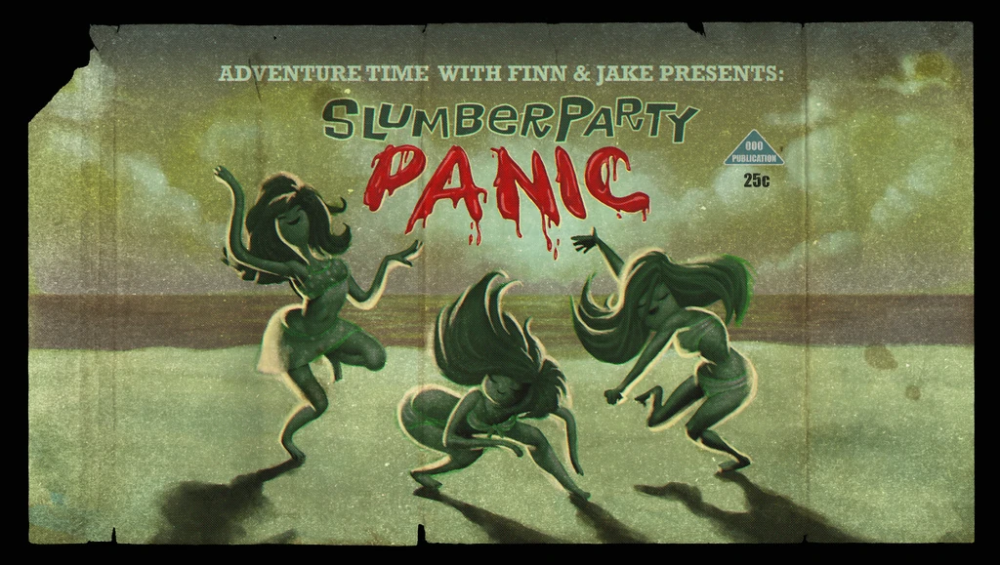

-

Sinopse:
Finn e a Princesa Jujuba devem proteger o Reino Doce de uma horda de zumbis doces que eles criaram acidentalmente sem que os cidadãos do Reino Doce descobrissem.
-
Sinopse:
Após a Princesa Caroço morder Jake ele começa a ficar encaroçado. Finn viaja a Terra do Caroço para encontrar uma cura.